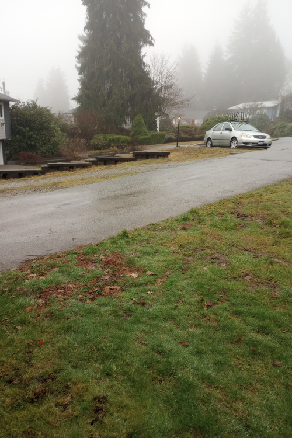
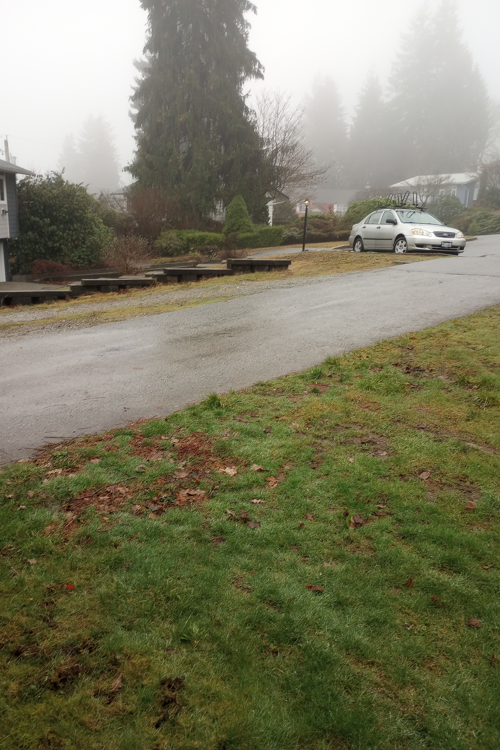

Name: Jared Tweed
Student No: 301439536
Date: February 12, 2023
I have not cheated in any way when doing this assignment, I did it on my own. I may have asked questions about the assignment on Piazza, I know that's totally fine and even encouraged. I also already know that this class is graded on a curve. I realize that if I cheat and by some miracle not get caught, any increase in my grade will in turn shift the curve and result in lower grades for my classmates. Any undeserved extra grade would come at the cost of all others. That's horrible! I would never do it.
 



The points that were discarded from the FAST algorithm when creating the Robust FAST image were the points that did not meet the cornerness measure from the Harris corner algorithm. These removed points were the corners that lacked significant gradient within the image. On average, the FAST algorithm takes about 0.15 seconds to execute, and the Robust FAST algorithm takes the FAST algorithm output and adds about 0.01 seconds to the execution time. Because the FAST algorithm creates a 3D matrix to store intensity differences and then applies a sliding window over the matrix to calculate the FAST points, it requires more memory and is thus slower than the section of the FAST algorithm that makes the FAST output robust. The Robust FAST algorithm is slower than the FAST algorithm overall because it uses the FAST algorithm in addition to other computations, thus making it slower.

In my code, I used the SURF feature descrtion method. The visualization in S1 had a more accurate and consistent output because it has a lot more sharp edges that can be found and used as points in our FAST algorithms (assuming that we used the same constants in our FAST algorithms for each set of images). To account for the lack of edges in S2, the images I took needed to be closer together. The Robust FAST algorithm seemed to reduce a lot of the inaccurate matched features when compared to the FAST algorithm.


I would like to note that I am aware that tforms(i).T is the homography matrix of tforms(i) in the code. As you can see I made a panorama with 4 images each in S1, S2, S3, S4. When experimenting with the panoramas I noticed that the Robust FAST algorithm would succeed more regularly once my project was near completion. However, early in the development process, when I was unaware of how to modify the amount of matches, the non-Robust FAST algorithm was more often successful because it would more regularly have enough points to create a homography matrix. Because the FAST algorithm has more points, it requires a larger number of trials (i found that it seemed to require about 1.5 as many as the Robust FAST algorithm). However, because the FAST algorithm had more points, the confidene parameter could be larger. Additionally, the max distance for the non-Robust FAST algorithm was smaller.